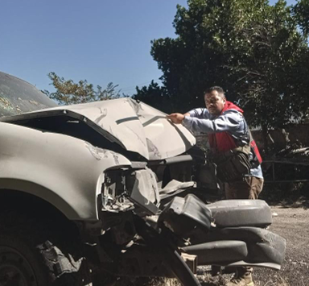

01
Verificación de siniestros
Hemos atendido más de 9,000 mil siniestros investigados a la fecha (2025).
Ver más servicios generales
Somos un grupo de profesionales de la criminología y
criminalística especializándonos para servir mejor.
Somos una organización dedicada a la prestación de servicios periciales y jurídicos multiprofesionales con personal altamente capacitado, además del desarrollo de programas, análisis de seguridad y programas preventivos, aunado al desarrollo de planes para intervención y reacción inmediata en materia de seguridad, ciberseguridad con peritos especializados en todas las áreas forenses, ya sea para investigaciones internas o ante instituciones o tribunales locales, estatales y federales.
Guiamos con visión y responsabilidad, inspirando a nuestro equipo y clientes hacia objetivo comunes con ejemplo y compromiso.
Integramos metodologías actualizadas y tecnologías de vanguardia para ofrecer procesos eficientes y soluciones adaptadas a cada necesidad.
Asumimos cada reto con dedicación total, generando confianza y resultados concretos que respaldan la excelencia de nuestros servicios.

Hemos atendido más de 9,000 mil siniestros investigados a la fecha (2025).
Ver más servicios generalesEl objetivo del dictamen es determinar los factores más determinantes.
Ver más servicios pericialesEl objetivo del dictamen es determinar que las transacciones controvertidas fueron operadas por la Institución Bancaria sin la validación de la firma electrónica.
Ver más servicios en informáticaConoce parte del contenido que compartimos y algunos casos que permiten mostrar la importancia de la criminología y las ciencias forenses.
Un espacio informativo para conocer más sobre está situación.
Analizamos el contexto de un caso que se volvió viral.